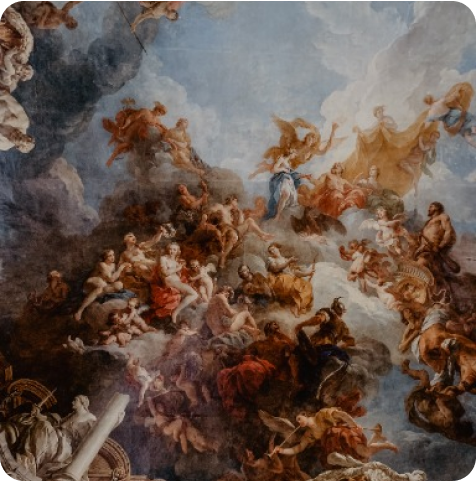
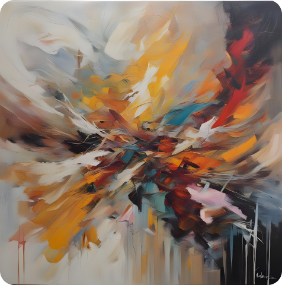
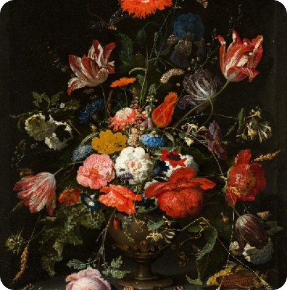
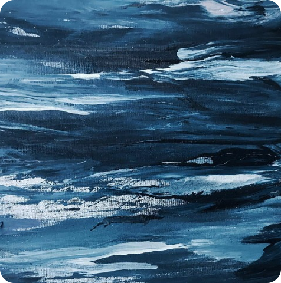

Maria Rodriguez
Hey there! I'm Maria Rodriguez, a passionate artist on a journey
to capture the world's beauty through my art.
Follow

Monta la
Maria Rodriguez
Capturing the Spirit of Freedom

Jazamay
Life art without an eraser

Eren Flow
The earth laughs in flowers

WayLoq
Waves are the voices of tides